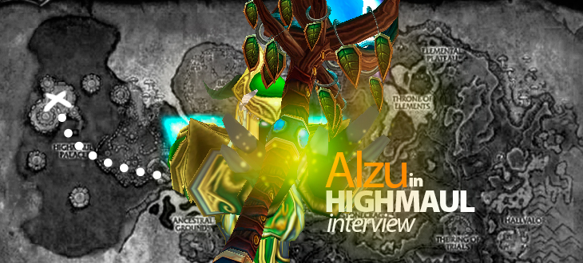

New Blood in Paragon: Alzu Interview

Alzu is one of the restoration druids playing currently in Paragon. He joined the guild together with other people from Depraved in 2013. You can follow Alzu and watch him raiding in the guild by checking out his stream at Twitch.
Hi there! Introduce yourself to us briefly.
Hey. I’m Alzu and play a restoration druid in Paragon. I’ve played the game for the past 10 years, druid for 9 and still love it. In the real world, I’m known as Neero and live in Espoo in southern Finland and am a full time student.
What do you do on your free time, when you aren’t playing World of Warcraft?
I currently study in university so that takes quite a lot of my free time. Outside of that I play other games and try to socialize with my friends.
Tell us about your World of Warcraft history and what class you play now.
When I was really young I looked up to my brothers’ and did everything they were doing. They happened to love the Warcraft franchise and naturally were excited about WoW as well. So they got in to the first beta and I really wanted to try it out. We planned everything from our first characters class and name to their looks. Or well, they did thing about the looks. I just randomized mine and quit my warrior because he was ugly. After that I rerolled druid and casually played throughout vanilla and BC. Most of my days I spent in a casual guild Routa, small social Finnish guild. We even put up some 10 man raids in Karazhan and Zul’aman and boy, was I excited about them back then.
In Wrath I was mainly goofing around until the end of the expansion when I started playing PvP and that was my main thing in WoW for a while. I still wanted to raid so I joined a raiding guild in ICC which unfortunately disbanded after 2 weeks of my time there. It left a bad taste in my mouth but I wanted to try the PvE thing as well so I formed my own guild with a friend of mine. We never raided anything serious and we had difficulties finding the 10 required players so it didn’t end up lasting too long either.
In Cataclysm PvP got really serious for me. I did still try to kill some raid bosses, this time with Depraved in 25-man but their roster was falling apart again. I felt like I was cursed with collapsing guilds. But anyways I dedicated a lot to arenas at that point and realised that I can actually be good at the game. I learned a ton about druids, mainly restoration and balance, just because of the hours I put in the game. Towards the end of season 9 and tier 11, I had had enough of PvP and was still hanging around in Depraved so I snuck in the forming 10-man raiding team that started just before Firelands hit. We started quite casual, battling for a small server’s realm firsts but noticed that we had potential so every raid tier we improved a bit and put a little bit more effort in.
People came and went in the raid team but the improvement could still be seen every time a new tier opened. Climbing the world ranks, I was so proud of our name being mentioned in Manaflask the first time when Throne of Thunder was out even though we made it only in top 20 of 10-man.
At this point, I was approached by Sejta for their 10-man roster. At first I was blown away, me being asked in one of best guilds of WoW? I would’ve never expected that at the time. Unfortunately I had to decline the offer. I wasn’t ready for the time investment. My first year in university was starting and it was something I valued over raiding.
After the Blizzcon of 2013 when Blizzard announced mythic raiding, we knew in Depraved we had to join Paragon to keep improving in this game. We had been putting more and more effort in Depraved though, and the moments we weren’t in school, work or sleeping, we were raiding. I felt that from that situation the jump to being 100% dedicated to progress wasn’t that high, so Depraved had to disband and we joined Paragon and I’ve at least felt like home here since.
All of this time I’ve been enjoying my druid with alts playing very minor roles. I don’t hate my alts but I just enjoy my druid more. I’ve had all my experiences in this game on it so it has sentimental value to me.
Why are you playing a druid? How did it perform in Highmaul?
I don’t exactly know why I picked up druid when I made the character but I’ve just haven’t had any reason to reroll anything. Restoration and balance have never been bad during my time of playing them so I’ve been welcome raid always on my druid. In Highmaul restoration druids weren’t quite on top of the healer food chain but still good enough to justify a spot in the roster. It was more the utility of druids that brings value to the spec, instead of pure HPS numbers.
Imperator Mar’gok was the first boss you killed before anyone else in the world. How did it feel when the boss finally died? Was it like you expected it to be?
It was very much like I expected, just more satisfying. We had been very excited in Depraved in our first kills so the general feeling was very similar. It being a world first didn’t add much more into it.
You played earlier in Depraved, another Finnish 10-man team. What expectations did you have about Paragon before you joined? Are things in the guild like you thought they would be?
I was expecting a very serious atmosphere all the time but I was proven wrong once I joined. I didn’t emphasize on the expectations at all though. I just lived by the moment and went with what Paragon had to offer.
What is the main difference between your old guild Depraved and Paragon?
Dedication. In Depraved we did our best what was easily accessible. In Paragon everything is done in order to reach our best performance. Paragon is also much much more organized.
How was the pressure during the progress? Especially when you were at 5/7 and many people thought you were progressing on Butcher.
As a newcomer to the world first race, I felt a lot of pressure by the situation. The resistance Butcher put on us was a lot more than I had expected, especially after seeing other guilds kill him relatively easy. The general atmosphere wasn’t that stressed out though. I guess the others knew better what to expect.
Name one player from Paragon that you think should be awarded with “the best player in Highmaul progress”, if such a trophy existed?
It’s tough naming only one since of course it’s a group effort. But if I had to choose, the award would probably go to Lyn. His healing as a discipline priest was just so awesome and very rarely he was dying to stupid things. It’s hard to say for sure though, who deserves it the most.
How was the overall difficulty of the instance? If you gave each boss a rank from 1-10, how would it look like?
Overall I’d give it a 7. It wasn’t the hardest instance I’ve progressed but still needed effort to clear. For each boss, it’d look something like this:
Kargath - 1
Tectus - 4
Brackenspore - 3
Butcher - 7
Twin Ogron - 1
Ko’ragh - 5
Mar’gok - 8
What are your favourite bosses of all time, and how does Imperator compare to them?
My favourite is hard to choose as I like so many of the fights. I’m really fond of traditional bosses though, where you have a single boss with adds and very clear phases with intermissions. The top spot is shared between Lei Shen, Siegecrafter Blackfuse and Ragnaros. Imperator Mar’gok is very close to them and probably will fit in top 5. Its a nice traditional fight but has some issues, mainly with length and repetitiveness but they’re not major.
What are your expectations for Blackrock Foundry? Which boss are you looking forward the most?
No expectations set yet. Hopefully a good race with a satisfying result. The last boss is always the most interesting one but Blast Furnace and Iron Maidens look really interesting as well.
If you could change one thing with your class, it would be…
I’m not sure actually. I’m kinda indecisive if I would rather make the Treant Form a costume instead of a shapeshift or changing two of the tier 100 talents for restoration to be actually useful.
If you could change one thing in World of Warcraft, it would be…
Adding a 100% support spec to a class or a new class completely with such spec. Instead of just healing, they would buff and improve other players’ performance. I would reroll to one so fast.
Any shoutouts?
Shoutout to my friends at the university who have carried me through the courses there during the last 3 weeks!
- Log in to post comments
Comments
Hi Alzu
Nice to know you, and keep it hardcore ;-)
Tue, 16/12/2014 - 21:25
Nice read. Good to see Depraved and Paragon making such a great roster together. Also good to see some activiy here again, thank you Xeno!
Wed, 17/12/2014 - 10:08